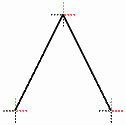
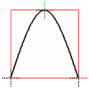
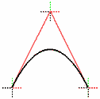
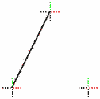

При помощи объекта lines в Xtreme3D можно рисовать линии - отрезки и кривые.
Линии образуются цепочкой так называемых узлов или нодов (nodes) - точек, определяющих направление линий. В случае с отрезками, эти точки просто последовательно соединяются, а для кривых узлы служат координатами векторов наклона касательных. Касательная - это линия, соприкасающаяся с кривой в одной-единственной точке. Эта точка называется контрольной.
Всего поддерживается пять типов линий. На приведенных ниже иллюстрациях показано, как выбор типа линии влияет на конечный результат при одном и том же наборе из трех узлов. Для наглядности красным цветом обозначены касательные и вспомогательные линии.
Прямая (Line) - узлы последовательно соединены в ломаную линию:

Кубический сплайн (Cubic Spline) - кривая плавно проходит через все узлы:

Сплайн Безье (Bezier Spline) - линии, соединяющие узлы, служат касательными к кривой в контрольных точках (в случае со сплайнами Безье, узлы обычно называют касательными точками - tangent points):

NURBS (Non-Uniform Rational B-Spline) - наиболее универсальный и общий тип кривых, также использующий контрольные точки.
Пунктир (Segments) - линии отображаются поочередно (первая - видимая, вторая - невидимая, третья - видимая и т.д.):

real LinesCreate(real parent);
Создает новую линию (цепочку узлов) и возвращает указатель на нее.
parent - указатель на родителя.real LinesAddNode(real line, real x, real y, real z);
Добавляет новый узел в линию и присваивает ему порядковый номер. Отсчет начинается с нуля.
line - указатель на линиюx, y, z - локальные координаты узла.real LinesDeleteNode(real line, real ind);
Удаляет узел под заданным номером.
line - указатель на линиюind - порядковый номер узла.real LinesSetNode(real lines, real ind, real x, real y, real z);
Задает позицию узла.
line - указатель на линиюind - порядковый номер узлаx, y, z - локальные координаты узла.real LinesSetColors(real line, real linecolor, real linealpha, real nodecolor, real nodealpha);
Задает цвет линий и узлов.
line - указатель на линиюlinecolor, linealpha - цвет и прозрачность линийnodecolor, nodealpha - цвет и прозрачность узлов.real LinesSetSize(real line, real linewidth, real nodesize);
Задает ширину линий и масштаб отображения узлов.
line - указатель на линиюlinewidth - ширина линийnodesize - масштаб узлов.real LinesSetSplineMode(real line, real lsm);
Задает тип линий.
line - указатель на линиюlsm - тип линий. Доступны следующие значения lsm:lsmLines = 0 - прямаяlsmCubicSpline = 1 - кубический сплайнlsmBezierSpline = 2 - сплайн БезьеlsmNURBSCurve = 3 - NURBSlsmSegments = 4 - пунктир.real LinesSetNodesAspect(real line, real lna);
Задает режим отображения узлов.
line - указатель на линиюlna - режим отображения узлов. Доступны следующие значения lna:lnaInvisible = 0 - невидимыеlnaAxes = 1 - в виде осей XYZlnaCube = 2 - в виде каркасных кубовlnaDodecahedron = 3 - в виде двенадцатигранников.real LinesSetDivision(real line, real division);
Для достижения приемлемой производительности, кривые рендерятся как набор маленьких прямых отрезков. Данная функция задает количество этих отрезков: чем оно больше, тем более гладкой будет выглядеть кривая.
line - указатель на линиюdivision - количество отрезков.